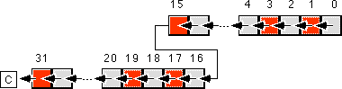

|
Table of Content | Chapter Nine (Part 6) |
|
Table of Content | Chapter Nine (Part 6) |
Although there are several ways to negate an extended
precision value, the shortest way is to use a combination of neg and sbb
instructions. This technique uses the fact that neg subtracts its operand
from zero. In particular, it sets the flags the same way the sub instruction
would if you subtracted the destination value from zero. This code takes the following
form:
neg dx
neg ax
sbb dx,0
The sbb instruction decrements dx if
there is a borrow out of the L.O. word of the negation operation (which always occurs
unless ax is zero).
To extend this operation to additional bytes, words, or double words is easy; all you have to do is start with the H.O. memory location of the object you want to negate and work towards the L.O. byte. The following code computes a 128 bit negation on the 80386 processor:
Value dword 0,0,0,0 ;128 bit integer.
.
.
.
neg Value+12 ;Neg H.O. dword
neg Value+8 ;Neg previous dword in memory.
sbb Value+12, 0 ;Adjust H.O. dword
neg Value+4 ;Neg the second dword in object.
sbb Value+8, 0 ;Adjust 3rd dword in object.
sbb Value+12, 0 ;Carry any borrow through H.O. word.
neg Value ;Negate L.O. word.
sbb Value+4, 0 ;Adjust 2nd dword in object.
sbb Value+8, 0 ;Adjust 3rd dword in object.
sbb Value+12, 0 ;Carry any borrow through H.O. word.
Unfortunately, this code tends to get really large and slow since you need to propogate the carry through all the H.O. words after each negate operation. A simpler way to negate larger values is to simply subract that value from zero:
Value dword 0,0,0,0,0 ;160 bit integer.
.
.
.
mov eax, 0
sub eax, Value
mov Value, eax
mov eax, 0
sbb eax, Value+4
mov Value+8, ax
mov eax, 0
sbb eax, Value+8
mov Value+8, ax
mov eax, 0
sbb eax, Value+12
mov Value+12, ax
mov eax, 0
sbb eax, Value+16
mov Value+16, ax
Performing an n-word and operation is very easy - simply and the corresponding words between the two operands, saving the result. For example, to perform the and operation where all three operands are 32 bits long, you could use the following code:
mov ax, word ptr source1
and ax, word ptr source2
mov word ptr dest, ax
mov ax, word ptr source1+2
and ax, word ptr source2+2
mov word ptr dest+2, ax
This technique easily extends to any number of words, all you need to is logically and the corresponding bytes, words, or double words in the corresponding operands.
9.3.8 Extended Precision OR Operations
Multi-word logical or operations are performed in the same way as multi-word and operations. You simply or the corresponding words in the two operand together. For example, to logically or two 48 bit values, use the following code:
mov ax, word ptr operand1
or ax, word ptr operand2
mov word ptr operand3, ax
mov ax, word ptr operand1+2
or ax, word ptr operand2+2
mov word ptr operand3+2, ax
mov ax, word ptr operand1+4
or ax, word ptr operand2+4
mov word ptr operand3+4, ax
Extended precision xor operations are performed in a manner identical to and/or - simply xor the corresponding words in the two operands to obtain the extended precision result. The following code sequence operates on two 64 bit operands, computes their exclusive-or, and stores the result into a 64 bit variable. This example uses the 32 bit registers available on 80386 and later processors.
mov eax, dword ptr operand1
xor eax, dword ptr operand2
mov dword ptr operand3, eax
mov eax, dword ptr operand1+4
xor eax, dword ptr operand2+4
mov dword ptr operand3+4, eax
The not instruction inverts all the bits in
the specified operand. It does not affect any flags (therefore, using a conditional jump
after a not instruction has no meaning). An extended precision not is
performed by simply executing the not instruction on all the affected
operands. For example, to perform a 32 bit not operation on the value in (dx:ax),
all you need to do is execute the instructions:
not ax or not dx
not dx not ax
Keep in mind that if you execute the not instruction
twice, you wind up with the original value. Also note that exclusive-oring a value with
all ones (0FFh, 0FFFFh, or 0FF..FFh) performs the same operation as the not instruction.
9.3.11 Extended Precision Shift Operations
Extended precision shift operations require a shift and a
rotate instruction. Consider what must happen to implement a 32 bit shl using
16 bit operations:
1) A zero must be shifted into bit zero.
2) Bits zero through 14 are shifted into the next higher bit.
3) Bit 15 is shifted into bit 16.
4) Bits 16 through 30 must be shifted into the next higher bit.
5) Bit 31 is shifted into the carry flag.

The two instructions you can use to implement this 32 bit
shift are shl and rcl. For example, to shift the 32 bit quantity
in (dx:ax) one position to the left, you'd use the instructions:
shl ax, 1
rcl dx, 1
Note that you can only shift an extended precision value
one bit at a time. You cannot shift an extended precision operand several bits using the cl
register or an immediate value greater than one as the count using this technique.
To understand how this instruction sequence works, consider
the operation of these instructions on an individual basis. The shl instruction
shifts a zero into bit zero of the 32 bit operand and shifts bit 15 into the carry flag.
The rcl instruction then shifts the carry flag into bit 16 and then shifts
bit 31 into the carry flag. The result is exactly what we want.
To perform a shift left on an operand larger than 32 bits
you simply add additional rcl instructions. An extended precision shift left
operation always starts with the least significant word and each succeeding rcl instruction
operates on the next most significant word. For example, to perform a 48 bit shift left
operation on a memory location you could use the following instructions:
shl word ptr Operand, 1
rcl word ptr Operand+2, 1
rcl word ptr Operand+4, 1
If you need to shift your data by two or more bits, you can either repeat the above sequence the desired number of times (for a constant number of shifts) or you can place the instructions in a loop to repeat them some number of times. For example, the following code shifts the 48 bit value Operand to the left the number of bits specified in cx:
ShiftLoop: shl word ptr Operand, 1
rcl word ptr Operand+2, 1
rcl word ptr Operand+4, 1
loop ShiftLoop
You implement shr and sar in a similar way, except you must start at the H.O. word of the operand and work your way down to the L.O. word:
DblSAR: sar word ptr Operand+4, 1
rcr word ptr Operand+2, 1
rcr word ptr Operand, 1
DblSHR: shr word ptr Operand+4, 1
rcr word ptr Operand+2, 1
rcr word ptr Operand, 1
There is one major difference between the extended precision shifts described here and their 8/16 bit counterparts - the extended precision shifts set the flags differently than the single precision operations. For example, the zero flag is set if the last rotate instruction produced a zero result, not if the entire shift operation produced a zero result. For the shift right operations, the overflow, and sign flags aren't set properly (they are set properly for the left shift operation). Additional testing will be required if you need to test one of these flags after an extended precision shift operation. Fortunately, the carry flag is the flag most often tested after a shift operation and the extended precision shift instructions properly set this flag.
The shld and shrd instructions
let you efficiently implement multiprecision shifts of several bits on 80386 and later
processors. Consider the following code sequence:
ShiftMe dword 1234h, 5678h, 9012h
.
.
.
mov eax, ShiftMe+4
shld ShiftMe+8, eax, 6
mov eax, ShiftMe
shld ShiftMe+4, eax, 6
shl ShiftMe, 6
Recall that the shld instruction shifts bits
from its second operand into its first operand. Therefore, the first shld
instruction above shifts the bits from ShiftMe+4 into ShiftMe+8
without affecting the value in ShiftMe+4. The second shld
instruction shifts the bits from ShiftMe into ShiftMe+4.
Finally, the shl instruction shifts the L.O. double word the appropriate
amount. There are two important things to note about this code. First, unlike the other
extended precision shift left operations, this sequence works from the H.O. double word
down to the L.O. double word. Second, the carry flag does not contain the carry out of the
H.O. shift operation. If you need to preserve the carry flag at that point, you will need
to push the flags after the first shld instruction and pop the flags after
the shl instruction.
You can do an extended precision shift right operation
using the shrd instruction. It works almost the same way as the code sequence
above except you work from the L.O. double word to the H.O. double word. The solution is
left as an exercise at the end of this chapter.
9.3.12 Extended Precision Rotate Operations
The rcl and rcr operations extend
in a manner almost identical to that for shl and shr . For
example, to perform 48 bit rcl and rcr operations, use the
following instructions:
rcl word ptr operand,1
rcl word ptr operand+2, 1
rcl word ptr operand+4, 1
rcr word ptr operand+4, 1
rcr word ptr operand+2, 1
rcr word ptr operand, 1
The only difference between this code and the code for the
extended precision shift operations is that the first instruction is a rcl or
rcr rather than a shl or shr instruction.
Performing an extended precision rol or ror
instruction isn't quite as simple an operation. The 8086 extended precision
versions of these instructions appear in the exercises. On the 80386 and later processors,
you can use the bt, shld, and shrd instructions to
easily implement an extended precision rol or ror instruction.
The following code shows how to use the shld instruction to do an extended
precision rol:
; Compute ROL EDX:EAX, 4
mov ebx, edx
shld edx, eax, 4
shld eax, ebx, 4
bt eax, 0 ;Set carry flag, if desired.
An extended precision ror instruction is
similar; just keep in mind that you work on the L.O. end of the object first and the H.O.
end last.
Occasionally you may need to compute some value on a pair of operands that are not the same size. For example, you may need to add a word and a double word together or subtract a byte value from a word value. The solution is simple: just extend the smaller operand to the size of the larger operand and then do the operation on two similarly sized operands. For signed operands, you would sign extend the smaller operand to the same size as the larger operand; for unsigned values, you zero extend the smaller operand. This works for any operation, although the following examples demonstrate this for the addition operation.
To extend the smaller operand to the size of the larger operand, use a sign extension or zero extension operation (depending upon whether you're adding signed or unsigned values). Once you've extended the smaller value to the size of the larger, the addition can proceed. Consider the following code that adds a byte value to a word value:
var1 byte ? var2 word ? Unsigned addition: Signed addition: mov al, var1 mov al, var1 mov ah, 0 cbw add ax, var2 add ax, var2
In both cases, the byte variable was loaded into the al register, extended to 16 bits, and then added to the word operand. This code works out really well if you can choose the order of the operations (e.g., adding the eight bit value to the sixteen bit value). Sometimes, you cannot specify the order of the operations. Perhaps the sixteen bit value is already in the ax register and you want to add an eight bit value to it. For unsigned addition, you could use the following code:
mov ax, var2 ;Load 16 bit value into AX
. ;Do some other operations leaving
. ; a 16 bit quantity in AX.
add al, var1 ;Add in the 8 bit value.
adc ah, 0 ;Add carry into the H.O. word.
The first add instruction in this example adds the byte at var1 to the L.O. byte of the value in the accumulator. The adc instruction above adds the carry out of the L.O. byte into the H.O. byte of the accumulator. Care must be taken to ensure that this adc instruction is present. If you leave it out, you may not get the correct result.
Adding an eight bit signed operand to a sixteen bit signed value is a little more difficult. Unfortunately, you cannot add an immediate value (as above) to the H.O. word of ax. This is because the H.O. extension byte can be either 00h or 0FFh. If a register is available, the best thing to do is the following:
mov bx, ax ;BX is the available register.
mov al, var1
cbw
add ax, bx
If an extra register is not available, you might try the following code:
add al, var1
cmp var1, 0
jge add0
adc ah, 0FFh
jmp addedFF
add0: adc ah, 0
addedFF:
Of course, if another register isn't available, you could always push one onto the stack and save it while you're performing the operation, e.g.,
push bx
mov bx, ax
mov al, var1
cbw
add ax, bx
pop bx
Another alternative is to store the 16 bit value in the accumulator into a memory location and then proceed as before:
mov temp, ax
mov al, var1
cbw
add ax, temp
All the examples above added a byte value to a word value. By zero or sign extending the smaller operand to the size of the larger operand, you can easily add any two different sized variables together. Consider the following code that adds a signed byte operand to a signed double word:
var1 byte ?
var2 dword ?
mov al, var1
cbw
cwd ;Extend to 32 bits in DX
add ax, word ptr var2
adc dx, word ptr var2+2
Of course, if you have an 80386 or later processor, you could use the following code:
movsx eax, var1
add eax, var2
An example more applicable to the 80386 is adding an eight bit value to a quadword (64 bit) value, consider the following code:
BVal byte -1
QVal qword 1
movsx eax, BVal
cdq
add eax, dword ptr QVal
adc edx, dword ptr QVal+4
For additional examples, see the exercises at the end of this chapter.
|
Table of Content | Chapter Nine (Part 6) |
Chapter Nine: Arithmetic And Logical
Operations (Part 5)
27 SEP 1996